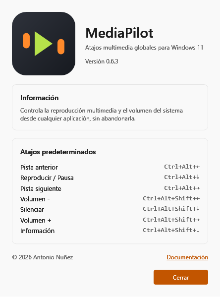
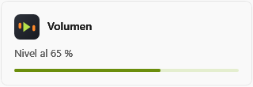
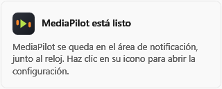
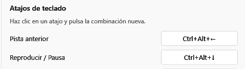

Versión 0.6.3 · Windows 11
Atajos multimedia globales para Windows 11
Reproduce, salta de pista y ajusta el volumen desde cualquier aplicación con una sola tecla. MediaPilot es una aplicación nativa que vive en la bandeja del sistema: no hay scripts que mantener ni ventanas de por medio.


Siete atajos, siempre en el mismo sitio
Windows reserva las combinaciones de forma global: si otra aplicación tiene la misma, la que gana es la primera que la registró. Estos son los atajos por defecto de MediaPilot y puedes cambiarlos todos desde su ventana de ajustes.
-
Nativo de verdad
Escrito en C# sobre .NET 10 y WPF, con el tema de Windows 11. No hay AutoHotkey que instalar ni un script que se rompa al actualizar el sistema.
-
Bandeja y configuración visual
Vive en el área de notificación, junto al reloj. Desde su ventana cambias los atajos, el tema claro u oscuro y el arranque con Windows.
-
Una sola instancia
Si lo abres dos veces, la segunda avisa a la que ya está corriendo y termina. Los atajos globales no se pelean entre copias.
-
Instalación por usuario
Se instala en tu perfil, en %LOCALAPPDATA%\Programs\MediaPilot, y nunca pide permisos de administrador.
Te avisa de dónde está
MediaPilot no tiene ventana propia: vive en la bandeja. La primera vez que arranca te explica dónde se ha quedado, y cada cambio de volumen aparece en una notificación discreta.


Sin telemetría. Sin código oculto.
MediaPilot hace una cosa y no hace nada más. Estas dos promesas no hay que creérselas: se comprueban en el código.
No hay telemetría
MediaPilot no abre ninguna conexión de red. En todo el proyecto no hay ni una llamada a internet: ni estadísticas, ni informe de errores, ni comprobación de actualizaciones. No hay cuentas ni servidores, y funciona con el cable de red desconectado.
El código está a la vista
Todo el código está en GitHub, bajo licencia MIT, con el historial de cada cambio y 72 pruebas que la integración continua ejecuta en cada publicación. Puedes leerlo, compilarlo y hacer con él lo que quieras.
Todo lo que toca en tu disco
Al usarlo, dos ficheros. Y nada más.
%LOCALAPPDATA%\MediaPilot\settings.json
Tus ajustes: los atajos, el tema y el arranque con Windows.
%LOCALAPPDATA%\MediaPilot\logs\
El registro de diagnóstico: un fichero por día.
%LOCALAPPDATA%\Programs\MediaPilot
El programa, que deja el instalador. Si activas el arranque con Windows,
añade además una entrada en el registro de Windows que quitas desde la
propia aplicación.
Descarga verificada
El instalador se sirve desde la publicación oficial del proyecto en GitHub, sobre HTTPS. Puedes comprobar tú mismo que el fichero es el nuestro.
SHA-256 del instalador 0.6.3
Este es el resumen del fichero exacto que enlaza el botón de arriba.
7FB8B2D0F2F44E6952F9D70FCF19DC701AF7A712F4C010BF39E97447B0CEF5ED
En PowerShell: Get-FileHash .\MediaPilot-x64.msi -Algorithm SHA256
El aviso de Windows
El instalador todavía no está firmado con un certificado de compra, así que SmartScreen lo marca en la primera ejecución.